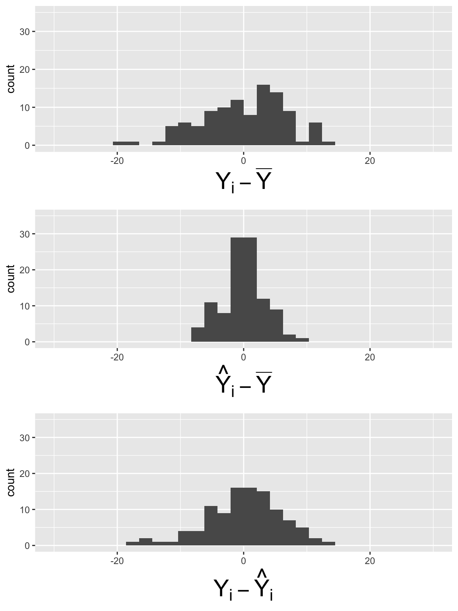
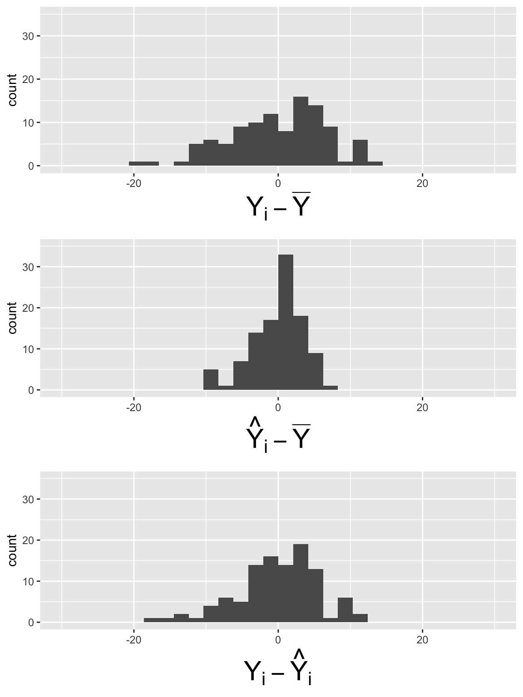
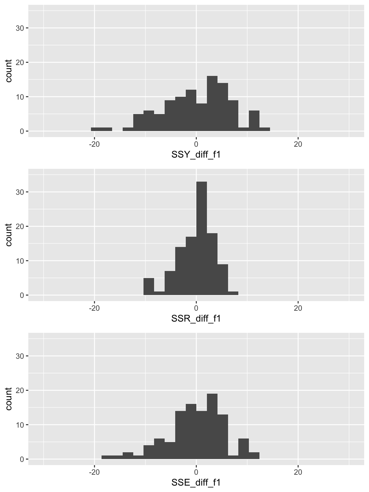
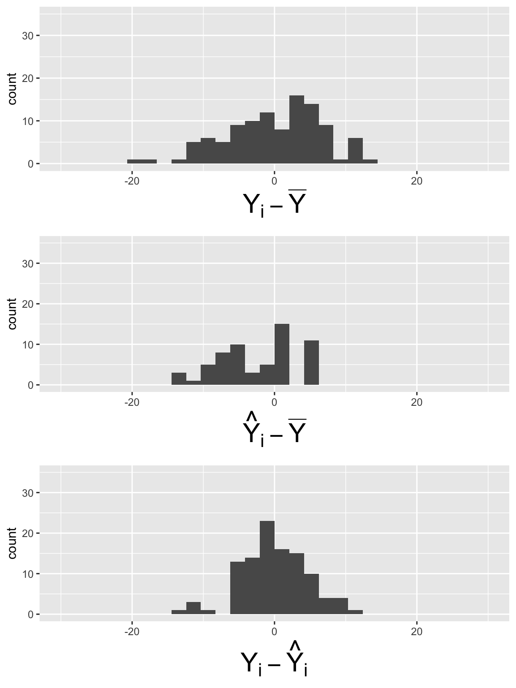

Lesson 10: MLR: Using the F-test
2026-02-18
Learning Objectives
- Understand the use of the general F-test and interpret what it measures.
- Understand the context of the Overall F-test, conduct the needed hypothesis test, and interpret the results.
- Understand the context of the single covariate/coefficient F-test, conduct the needed hypothesis test, and interpret the results.
- Understand the context of the group of covariates/coefficients F-test, conduct the needed hypothesis test, and interpret the results.
Let’s map that to our regression analysis process


Model Selection
Building a model
Selecting variables
Prediction vs interpretation
Comparing potential models
Model Fitting
Find best fit line
Using OLS in this class
Parameter estimation
Categorical covariates
Interactions
Model Evaluation
- Evaluation of model fit
- Testing model assumptions
- Residuals
- Transformations
- Influential points
- Multicollinearity
Model Use (Inference)
- Inference for coefficients
- Hypothesis testing for coefficients
- Inference for expected \(Y\) given \(X\)
How do we estimate the model parameters?
- We need to estimate the population model coefficients \(\widehat{\beta}_0, \widehat{\beta}_1, \widehat{\beta}_2, \ldots, \widehat{\beta}_k\)
- This can be done using the ordinary least-squares method
- Find the \(\widehat{\beta}\) values that minimize the sum of squares due to error (\(SSE\))
\[ \begin{aligned} SSE & = \displaystyle\sum^n_{i=1} \widehat\epsilon_i^2 \\ SSE & = \displaystyle\sum^n_{i=1} (Y_i - \widehat{Y}_i)^2 \\ SSE & = \displaystyle\sum^n_{i=1} (Y_i - (\widehat{\beta}_0 +\widehat{\beta}_1 X_{i1}+ \ldots+\widehat{\beta}_1 X_{ik}))^2 \\ SSE & = \displaystyle\sum^n_{i=1} (Y_i - \widehat{\beta}_0 -\widehat{\beta}_1 X_{i1}- \ldots-\widehat{\beta}_1 X_{ik})^2 \end{aligned}\]
LINE model assumptions in MLR
[L] Linearity of relationship between variables
The mean value of \(Y\) given any combination of \(X_1, X_2, \ldots, X_k\) values, is a linear function of \(\beta_0, \beta_1, \beta_2, \ldots, \beta_k\):
\[\mu_{Y|X_1, \ldots, X_k} = \beta_0 + \beta_1 X_1 + \beta_2 X_2+ \ldots + \beta_k X_k\]
[I] Independence of the \(Y\) values
Observations (\(X_1, X_2, \ldots, X_k, Y\)) are independent from one another
[N] Normality of the \(Y\)’s given \(X\) (residuals)
\(Y\) has a normal distribution for any any combination of \(X_1, X_2, \ldots, X_k\) values
- Thus, the residuals are normally distributed
[E] Equality of variance of the residuals (homoscedasticity)
The variance of \(Y\) is the same for any any combination of \(X_1, X_2, \ldots, X_k\) values
\[\sigma^2_{Y|X_1, X_2, \ldots, X_k} = Var(Y|X_1, X_2, \ldots, X_k) = \sigma^2\]
Summary of the LINE assumptions
- Equivalently, the residuals are independently and identically distributed (iid):
- normal
- with mean 0 and
- constant variance \(\sigma^2\)
- Residuals are still \(\widehat{\epsilon}_i=Y_i - \widehat{Y}_i\) for each observation
- It’s just that \(\widehat{Y}_i\) is now calculated with many covariates (\(X_1, X_2, \ldots, X_k\))
Learning Objectives
- Understand the use of the general F-test and interpret what it measures.
- Understand the context of the Overall F-test, conduct the needed hypothesis test, and interpret the results.
- Understand the context of the single covariate/coefficient F-test, conduct the needed hypothesis test, and interpret the results.
- Understand the context of the group of covariates/coefficients F-test, conduct the needed hypothesis test, and interpret the results.
Remember from Lesson 6: F-test vs. t-test for the population slope
The square of a \(t\)-distribution with \(df = \nu\) is an \(F\)-distribution with \(df = 1, \nu\)
\[T_{\nu}^2 \sim F_{1,\nu}\]
- We can use either F-test or t-test to run the following hypothesis test:
- Note that the F-test does not support one-sided alternative tests, but the t-test does!
Remember from Lesson 6: Planting a seed about the F-test
We can think about the hypothesis test for the slope…
Null \(H_0\)
\(\beta_1=0\)
Alternative \(H_1\)
\(\beta_1\neq0\)
in a slightly different way…
Null model (\(\beta_1=0\))
- \(Y = \beta_0 + \epsilon\)
- Smaller (reduced) model
Alternative model (\(\beta_1\neq0\))
- \(Y = \beta_0 + \beta_1 X + \epsilon\)
- Larger (full) model
In multiple linear regression, we can start using this framework to test multiple coefficient parameters at once
Decide whether or not to reject the smaller reduced model in favor of the larger full model
Cannot do this with the t-test!
Remember from Lesson 6: We can extend this!!
We can create a hypothesis test for more than one coefficient at a time…
Null \(H_0\)
\(\beta_1=\beta_2=0\)
Alternative \(H_1\)
\(\beta_1\neq0\) and/or \(\beta_2\neq0\)
in a slightly different way…
Null model
- \(Y = \beta_0 + \epsilon\)
- Smaller (reduced) model
Alternative* model
- \(Y = \beta_0 + \beta_1 X_1 + \beta_2 X_2 + \epsilon\)
- Larger (full) model
*This is not quite the alternative, but if we reject the null, then this is the model we move forward with
Poll Everywhere Question 1
Variation: Explained vs. Unexplained
\[\begin{aligned} \sum_{i=1}^n (Y_i - \overline{Y})^2 &= \sum_{i=1}^n (\widehat{Y}_i- \overline{Y})^2 + \sum_{i=1}^n (Y_i - \widehat{Y}_i)^2 \\ SSY &= SSR + SSE \end{aligned}\]
- \(Y_i - \overline{Y}\) = the deviation of \(Y_i\) around the mean \(\overline{Y}\)
- the total amount deviation
- \(\widehat{Y}_i- \overline{Y}\) = the deviation of the fitted value \(\widehat{Y}_i\) around the mean \(\overline{Y}\)
- the amount deviation explained by the regression at \(X_{i1},\ldots,X_{ik}\)
- \(Y_i - \widehat{Y}_i\) = the deviation of the observation \(Y\) around the fitted regression line
- the amount deviation unexplained by the regression at \(X_{i1},\ldots,X_{ik}\)
SLR: Another way to think of SSY, SSR, and SSE
Let’s create a data frame of each component within the SS’s
- Deviation in SSY: \(Y_i - \overline{Y}\)
- Deviation in SSR: \(\widehat{Y}_i- \overline{Y}\)
- Deviation in SSE: \(Y_i - \widehat{Y}_i\)
Using our simple linear regression model as an example:
SLR: Plot the components of each sum of squares
Code to make the below plots
SSY_plot = ggplot(SS_dev_slr, aes(SSY_dev)) + geom_histogram() + xlim(-30, 30) + ylim(0, 35) + xlab(expression(Y[i] - bar(Y)))
SSR_plot = ggplot(SS_dev_slr, aes(SSR_dev)) + geom_histogram() + xlim(-30, 30) + ylim(0, 35) +xlab(expression(hat(Y)[i] - bar(Y)))
SSE_plot = ggplot(SS_dev_slr, aes(SSE_dev)) + geom_histogram() + xlim(-30, 30) + ylim(0, 35) + xlab(expression(Y[i] - hat(Y)[i]))
grid.arrange(SSY_plot, SSR_plot, SSE_plot, nrow = 3)
\[SSY = \sum_{i=1}^n (Y_i - \overline{Y})^2 = 45.75\]
\[SSR = \sum_{i=1}^n (\widehat{Y}_i- \overline{Y})^2 = 10.52\]
\[SSE =\sum_{i=1}^n (Y_i - \widehat{Y}_i)^2 = 35.23\]
MLR: Another way to think of SSY, SSR, and SSE
Let’s create a data frame of each component within the SS’s
- Deviation in SSY: \(Y_i - \overline{Y}\)
- Deviation in SSR: \(\widehat{Y}_i- \overline{Y}\)
- Deviation in SSE: \(Y_i - \widehat{Y}_i\)
Using our simple linear regression model as an example:
MLR: Plot the components of each sum of squares
Code to make the below plots
SSY_plot = ggplot(SS_df, aes(SSY_dev)) + geom_histogram() + xlim(-30, 30) + ylim(0, 35) + xlab(expression(Y[i] - bar(Y)))
SSR_plot = ggplot(SS_df, aes(SSR_dev)) + geom_histogram() + xlim(-30, 30) + ylim(0, 35) +xlab(expression(hat(Y)[i] - bar(Y)))
SSE_plot = ggplot(SS_df, aes(SSE_dev)) + geom_histogram() + xlim(-30, 30) + ylim(0, 35) + xlab(expression(Y[i] - hat(Y)[i]))
grid.arrange(SSY_plot, SSR_plot, SSE_plot, nrow = 3)
\[SSY = \sum_{i=1}^n (Y_i - \overline{Y})^2 = 45.75\]
\[SSR = \sum_{i=1}^n (\widehat{Y}_i- \overline{Y})^2 = 12.28\]
\[SSE =\sum_{i=1}^n (Y_i - \widehat{Y}_i)^2 = 33.47\]
What did you notice in the plots?
Simple Linear Regression
Multiple Linear Regression

\[SSY = 45.75\]
\[SSR = 10.52\]
\[SSE =35.23\]

\[SSY = 45.75\]
\[SSR = 12.28\]
\[SSE =33.47\]
- With F-test: we can determine if model fit is better by comparing the SSE’s of different models
When running a F-test for linear models…
- We need to define a larger, full model (more parameters)
- We need to define a smaller, reduced model (fewer parameters)
- Use the F-statistic to decide whether or not we reject the smaller model
- The F-statistic compares the SSE of each model to determine if the full model explains a significant amount of additional variance
\[ F = \dfrac{\frac{SSE_{red} - SSE_{full}}{df_{red} - df_{full}}}{\frac{SSE_{full}}{df_{full}}} \]
- \(SSE(R)\) \(\geq\) \(SSE(F)\)
- Numerator measures difference in unexplained variation between the models
- Big difference = added parameters greatly reduce the unexplained variation (increase explained variation)
- Smaller difference = added parameters don’t reduce the unexplained variation
- Take ratio of difference to the unexplained variation in the full model
Poll Everywhere Question 2
We will keep working with the MLR model from last class
New population model for example:
\[\text{LE} = \beta_0 + \beta_1 \text{CP} + \beta_2 \text{VR} + \epsilon\]
| term | estimate | std.error | statistic | p.value | conf.low | conf.high |
|---|---|---|---|---|---|---|
| (Intercept) | 46.833 | 6.042 | 7.751 | 0.000 | 34.848 | 58.818 |
| cell_phones_100 | 0.075 | 0.018 | 4.074 | 0.000 | 0.039 | 0.112 |
| vax_rate | 0.168 | 0.073 | 2.318 | 0.022 | 0.024 | 0.312 |
Fitted multiple regression model:
\[\begin{aligned} \widehat{\text{LE}} &= \widehat{\beta}_0 + \widehat{\beta}_1 \text{CP} + \widehat{\beta}_2 \text{VR} \\ \widehat{\text{LE}} &= 46.833 + 0.075 \ \text{CP} + 0.168\ \text{VR} \end{aligned}\]
Building a very important toolkit: three types of tests
Overall test
Does at least one of the covariates/predictors contribute significantly to the prediction of Y?
Test for addition of a single variable’s coefficient (covariate subset test)
Does the addition of one particular covariate (with a single coefficient) add significantly to the prediction of Y achieved by other covariates already present in the model?
Test for addition of group of variables’ coefficient (covariate subset test)
Does the addition of some group of covariates (or one covariate with multiple coefficients) add significantly to the prediction of Y achieved by other covariates already present in the model?
Learning Objectives
- Understand the use of the general F-test and interpret what it measures.
- Understand the context of the Overall F-test, conduct the needed hypothesis test, and interpret the results.
- Understand the context of the single covariate/coefficient F-test, conduct the needed hypothesis test, and interpret the results.
- Understand the context of the group of covariates/coefficients F-test, conduct the needed hypothesis test, and interpret the results.
Overall F-test
Does at least one of the covariates/predictors contribute significantly to the prediction of Y?
- For a general population MLR model, \[Y = \beta_0 + \beta_1 X_1 + \beta_2 X_2+ \ldots + \beta_k X_k + \epsilon\]
We can create a hypothesis test for all the covariate coefficients…
Null \(H_0\)
\(\beta_1=\beta_2= \ldots=\beta_k=0\)
Alternative \(H_1\)
At least one \(\beta_j\neq0\) (for \(j=1, 2, \ldots, k\))
Null / Smaller / Reduced model
\(Y = \beta_0 + \epsilon\)
Alternative / Larger / Full model
\(Y = \beta_0 + \beta_1 X_1 + \beta_2 X_2 + \ldots + \beta_k X_k + \epsilon\)
Overall F-test: general steps for hypothesis test
Check the assumptions
Set the level of significance
- Often we use \(\alpha = 0.05\)
Specify the null ( \(H_0\) ) and alternative ( \(H_A\) ) hypotheses
- Often, we are curious if the coefficient is 0 or not:
Specify the test statistic and its distribution under the null
- The test statistic is \(F\), and follows an F-distribution with numerator \(df=k\) and denominator \(df=n-k-1\). (\(n\) = # obversation, \(k\) = # covariates)
- Calculate the test statistic
The calculated test statistic is
\[F^ = \dfrac{\frac{SSE(R) - SSE(F)}{df_R - df_F}}{\frac{SSE(F)}{df_F}} = \frac{MSR_{full}}{MSE_{full}}\]
Calculate the p-value
- We are generally calculating: \(P(F_{k, n-k-1} > F)\)
Write a conclusion
- Reject: \(P(F_{k, n-k-1} > F) < \alpha\)
We (reject/fail to reject) the null hypothesis at the \(100\alpha\%\) significance level. There is (sufficient/ insufficient) evidence that at least one of the coefficients is not 0 (p-value = \(P(F_{k, n-k-1} > F)\)).
Overall F-test: a word on the conclusion
- If \(H_0\) is rejected, we conclude there is sufficient evidence that at least one predictor’s coefficient is different from zero.
- Same as: at least one independent variable contributes significantly to the prediction of \(Y\)
- If \(H_0\) is not rejected, we conclude there is insufficient evidence that at least one predictor’s coefficient is different from zero.
- Same as: Not enough evidence that at least one independent variable contributes significantly to the prediction of \(Y\)
Let’s think about our MLR example for life expectancy
Our proposed population model
\[\text{LE} = \beta_0 + \beta_1 \text{CP} + \beta_2 \text{VR} + \epsilon\]
Fitted multiple regression model:
\[\begin{aligned} \widehat{\text{LE}} &= \widehat{\beta}_0 + \widehat{\beta}_1 \text{CP} + \widehat{\beta}_2 \text{VR} \\ \widehat{\text{LE}} &= 46.833 + 0.075 \ \text{CP} + 0.168\ \text{VR} \end{aligned}\]
Our main question for the Overall F-test: Is the regression model containing cell phones and vaccination rate useful in estimating countries’ life expectancy?
Null / Smaller / Reduced model
\(LE = \beta_0 + \epsilon\)
Alternative / Larger / Full model
\(LE = \beta_0 + \beta_1 CP + \beta_2 VR + \epsilon\)
Comparing the SSY, SSR, and SSE for reduced and full model
Reduced / null model
\[LE = \beta_0 + \epsilon\]

\[SSY = 45.75\]
\[SSR = 0\]
\[SSE = 45.75\]
Full / Alternative model
\[LE = \beta_0 + \beta_1 CP + \beta_2 VR + \epsilon\]

\[SSY = 45.75\]
\[SSR = 12.28\]
\[SSE = 33.47\]
Poll Everywhere Question 3
So let’s step through our hypothesis test (1/3)
Check the assumptions
Set the level of significance
- Often we use \(\alpha = 0.05\)
Specify the null ( \(H_0\) ) and alternative ( \(H_A\) ) hypotheses
Specify the test statistic and its distribution under the null
- The test statistic is \(F\), and follows an F-distribution with numerator \(df=k=2\) and denominator \(df=n-k-1=105 - 2-1=102\). (\(n\) = # obversation, \(k\) = # covariates)
So let’s step through our hypothesis test (2/3)
- Calculate the test statistic / 6. Calculate the p-value
The calculated test statistic is
\[F^ = \dfrac{\frac{SSE(R) - SSE(F)}{df_R - df_F}}{\frac{SSE(F)}{df_F}}=44.443\] OR use ANOVA table:
So let’s step through our hypothesis test (3/3)
- Write a conclusion
We reject the null hypothesis at the 5% significance level. There is sufficient evidence that either countries’ number of cell phones or vaccination rate (or both) contributes significantly to the prediction of life expectancy (p-value < 0.001).
Learning Objectives
- Understand the use of the general F-test and interpret what it measures.
- Understand the context of the Overall F-test, conduct the needed hypothesis test, and interpret the results.
- Understand the context of the single covariate/coefficient F-test, conduct the needed hypothesis test, and interpret the results.
- Understand the context of the group of covariates/coefficients F-test, conduct the needed hypothesis test, and interpret the results.
Covariate subset test: Single variable
Does the addition of one particular covariate of interest (a numeric covariate with only one coefficient) add significantly to the prediction of Y achieved by other covariates already present in the model?
- For a general population MLR model, \[Y = \beta_0 + \beta_1 X_1 + \beta_2 X_2+ \beta_j X_j +\ldots + \beta_k X_k + \epsilon\]
We can create a hypothesis test for a single \(j\) covariate coefficient (where \(j\) can be any value \(1, 2, \ldots, k\))…
Null \(H_0\)
\(\beta_j=0\)
Alternative \(H_1\)
\(\beta_j\neq0\)
Null / Smaller / Reduced model
\(Y = \beta_0 + \beta_1 X_1 + \beta_2 X_2 + \ldots + \beta_k X_k + \epsilon\)
Alternative / Larger / Full model
\(\begin{aligned}Y = &\beta_0 + \beta_1 X_1 + \beta_2 X_2 + \beta_j X_j +\\ &\ldots + \beta_k X_k + \epsilon \end{aligned}\)
Single covariate F-test: general steps for hypothesis test (reference)
Check the assumptions
Set the level of significance
- Often we use \(\alpha = 0.05\)
Specify the null ( \(H_0\) ) and alternative ( \(H_A\) ) hypotheses
Specify the test statistic and its distribution under the null
- The test statistic is \(F\), and follows an F-distribution with numerator \(df=k\) and denominator \(df=n-k-1\). (\(n\) = # obversation, \(k\) = # covariates)
- Calculate the test statistic
The calculated test statistic is
\[F^ = \dfrac{\frac{SSE(R) - SSE(F)}{df_R - df_F}}{\frac{SSE(F)}{df_F}}\]
- Calculate the p-value
We are generally calculating: \(P(F_{k, n-k-1} > F)\)
- Write a conclusion
We (reject/fail to reject) the null hypothesis at the \(100\alpha\%\) significance level. There is (sufficient/insufficient) evidence that predictor/covariate \(j\) significantly improves the prediction of Y, given all the other covariates are in the model (p-value = \(P(F_{1, n-2} > F)\)).
Let’s think about our MLR example for life expectancy
Our proposed population model
\[\text{LE} = \beta_0 + \beta_1 \text{CP} + \beta_2 \text{VR} + \epsilon\]
Fitted multiple regression model:
\[\begin{aligned} \widehat{\text{LE}} &= \widehat{\beta}_0 + \widehat{\beta}_1 \text{CP} + \widehat{\beta}_2 \text{VR} \\ \widehat{\text{LE}} &= 33.595 + 0.157\ \text{CP} + 0.008\ \text{VR} \end{aligned}\]
Our main question for the single covariate subset F-test: Is the regression model containing vaccination rate improve the estimation of countries’ life expectancy, given cell phones per 100 people is already in the model?
Null / Smaller / Reduced model
\(LE = \beta_0 + \beta_1 CP + \epsilon\)
Alternative / Larger / Full model
\(LE = \beta_0 + \beta_1 CP + \beta_2 VR + \epsilon\)
Comparing the SSY, SSR, and SSE for reduced and full model
Reduced / null model
\[LE = \beta_0 + \beta_1 CP + \epsilon\]

\[SSY = 45.75\]
\[SSR = 10.52\]
\[SSE = 35.23\]
Full / Alternative model
\[LE = \beta_0 + \beta_1 CP + \beta_2 VR + \epsilon\]

\[SSY = 45.75\]
\[SSR = 12.28\]
\[SSE = 33.47\]
Poll Everywhere Question 4
So let’s step through our hypothesis test (1/3)
Check the assumptions
Set the level of significance
- Often we use \(\alpha = 0.05\)
Specify the null ( \(H_0\) ) and alternative ( \(H_A\) ) hypotheses
Often we use \(\alpha = 0.05\)
Specify the test statistic and its distribution under the null
- The test statistic is \(F\), and follows an F-distribution with numerator \(df=k=2\) and denominator \(df=n-k-1=105 - 2-1=102\). (\(n\) = # obversation, \(k\) = # covariates)
So let’s step through our hypothesis test (2/3)
- Calculate the test statistic / 6. Calculate the p-value
The calculated test statistic is
\[F^ = \dfrac{\frac{SSE(R) - SSE(F)}{df_R - df_F}}{\frac{SSE(F)}{df_F}}\] ANOVA table:
| term | df.residual | rss | df | sumsq | statistic | p.value |
|---|---|---|---|---|---|---|
| life_exp ~ cell_phones_100 | 103.000 | 3,663.747 | NA | NA | NA | NA |
| life_exp ~ cell_phones_100 + vax_rate | 102.000 | 3,480.371 | 1.000 | 183.376 | 5.374 | 0.022 |
So let’s step through our hypothesis test (3/3)
- Write a conclusion
We reject the null hypothesis at the 5% significance level. There is sufficient evidence that countries’ vaccination rate contributes significantly to the prediction of life expectancy, given that cell phones per 100 people is already in the model (p-value < 0.001).
Learning Objectives
- Understand the use of the general F-test and interpret what it measures.
- Understand the context of the Overall F-test, conduct the needed hypothesis test, and interpret the results.
- Understand the context of the single covariate/coefficient F-test, conduct the needed hypothesis test, and interpret the results.
- Understand the context of the group of covariates/coefficients F-test, conduct the needed hypothesis test, and interpret the results.
Covariate subset test: group of coefficients
Does the addition of some group of covariates of interest (or a multi-level categorical variable) add significantly to the prediction of Y obtained through other independent variables already present in the model?
- For a general population MLR model, \[Y = \beta_0 + \beta_1 X_1 + \beta_2 X_2+ \ldots + \beta_k X_k + \epsilon\]
We can create a hypothesis test for a group of covariate coefficients (subset of many)… For example…
Null \(H_0\)
\(\beta_1=\beta_3 =0\) (this can be any coefficients)
Alternative \(H_1\)
At least one \(\beta_j\neq0\) (for \(j=2,3\))
Null / Smaller / Reduced model
\(Y = \beta_0 + \beta_2 X_2 + \epsilon\)
Alternative / Larger / Full model
\(Y = \beta_0 + \beta_1 X + \beta_2 X + \beta_3 X_3+\epsilon\)
Covariate subset F-test: general steps for hypothesis test (reference)
Check the assumptions
Set the level of significance
- Often we use \(\alpha = 0.05\)
Specify the null ( \(H_0\) ) and alternative ( \(H_A\) ) hypotheses
For example:
\[\begin{align} H_0 &: \beta_1 = \beta_3 = 0\\ \text{vs. } H_A&: \text{At least one } \beta_j\neq0, \text{for }j=1,3 \end{align}\]Specify the test statistic and its distribution under the null
- The test statistic is \(F\), and follows an F-distribution with numerator \(df=k\) and denominator \(df=n-k-1\). (\(n\) = # obversation, \(k\) = # covariates)
- Calculate the test statistic
The calculated test statistic is
\[F^ = \dfrac{\frac{SSE(R) - SSE(F)}{df_R - df_F}}{\frac{SSE(F)}{df_F}}\]
- Calculate the p-value
We are generally calculating: \(P(F_{k, n-k-1} > F)\)
- Write a conclusion
We (reject/fail to reject) the null hypothesis at the \(100\alpha\%\) significance level. There is (sufficient/insufficient) evidence that predictors/covariates \(2,3\) significantly improve the prediction of Y, given all the other covariates are in the model (p-value = \(P(F_{1, n-2} > F)\)).
We need to slightly alter our MLR example for life expectancy
Our proposed population model to include percent access to basic sanitation (BS):
\[\text{LE} = \beta_0 + \beta_1 \text{CP} + \beta_2 \text{VR} + \beta_3 BS + \epsilon\]
- We don’t have a fitted multiple regression model for this yet!
Our main question for the group covariate subset F-test: Is the regression model containing vaccination rate and basic sanitation percent improve the estimation of countries’ life expectancy, given percent cell phones per 100 people is already in the model?
Null / Smaller / Reduced model
\(LE = \beta_0 + \beta_1 CP + \epsilon\)
Alternative / Larger / Full model
\(LE = \beta_0 + \beta_1 CP + \beta_2 VR + \beta_3 BS + \epsilon\)
Comparing the SSY, SSR, and SSE for reduced and full model
Reduced / null model
\[LE = \beta_0 + \beta_1 CP + \epsilon\]

\[SSY = 45.75\]
\[SSR = 10.52\]
\[SSE = 35.23\]
Full / Alternative model
\[LE = \beta_0 + \beta_1 CP + \beta_2 VR + \beta_3 BS + \epsilon\]

\[SSY = 45.75\]
\[SSR = 24.47\]
\[SSE = 21.28\]
So let’s step through our hypothesis test (1/3)
Check the assumptions
Set the level of significance
- Often we use \(\alpha = 0.05\)
Specify the null ( \(H_0\) ) and alternative ( \(H_A\) ) hypotheses
Specify the test statistic and its distribution under the null
- The test statistic is \(F\), and follows an F-distribution with numerator \(df=k=2\) and denominator \(df=n-k-1=105 - 2-1=102\). (\(n\) = # obversation, \(k\) = # covariates)
So let’s step through our hypothesis test (2/3)
- Calculate the test statistic / 6. Calculate the p-value
The calculated test statistic is
\[F^ = \dfrac{\frac{SSE(R) - SSE(F)}{df_R - df_F}}{\frac{SSE(F)}{df_F}}\] ANOVA table:
| term | df.residual | rss | df | sumsq | statistic | p.value |
|---|---|---|---|---|---|---|
| life_exp ~ cell_phones_100 | 103.000 | 3,663.747 | NA | NA | NA | NA |
| life_exp ~ cell_phones_100 + vax_rate + basic_sani | 101.000 | 2,213.194 | 2.000 | 1,450.552 | 33.098 | 0.000 |
So let’s step through our hypothesis test (3/3)
- Write a conclusion
We reject the null hypothesis at the 5% significance level. There is sufficient evidence that countries’ vaccination rate or basic sanitation (or both) contribute significantly to the prediction of life expectancy, given that cell phones per 100 people is already in the model (p-value < 0.001).
Other ways to word the hypothesis tests (reference)
Single covariate subset F-test
- \(H_0:\) \(X^*\) does not significantly improve the prediction of \(Y\), given that \(X_1, X_2, \ldots, X_p\) are already in the model
- \(H_A:\) \(X^*\) significantly improves the prediction of \(Y\), given that \(X_1, X_2, \ldots, X_p\) are already in the model
Group covariate subset F-test
- \(H_0:\) The addition of the \(s\) variables \(X_1^*, X_2^*, \ldots, X_s^*\) does not significantly improve the prediction of \(Y\), given that \(X_1, X_2, \ldots, X_q\) are already in the model
- \(H_A:\) The addition of the \(s\) variables \(X_1^*, X_2^*, \ldots, X_s^*\) significantly improves the prediction of \(Y\), given that \(X_1, X_2, \ldots, X_q\) are already in the model
Lesson 10: MLR 2